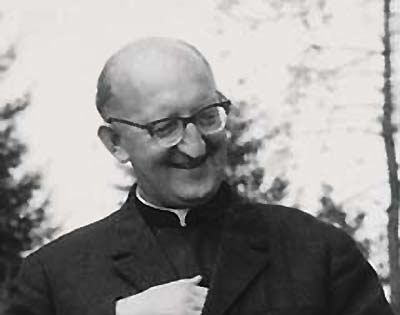

Nasz założyciel - ksiądz Franciszek Blachnicki (źródło: stacja7.pl)
 Do jego grobu, który w 2000 r. został przeniesiony z niemieckiego Carlsbergu, gdzie zmarł, do Krościenka n. Dunajcem nazywanego „stolicą oaz” mimo upływu lat wciąż pielgrzymuje wiele osób z kraju i zagranicy. Modlą się tam o wiarę „konsekwentną”, z której wynika działanie na rzecz Kościoła i społeczności lokalnej, o wolność wewnętrzną, rozumianą jako wolność od lęku i zaufanie Bogu. Proszą też o harmonię pomiędzy tym, co mówią i jak żyją. Rodzice przywożą tam swoje dzieci, oazowicze organizują pielgrzymki, a dawni działacze społeczni pokazując kolegom grób zmarłego księdza mówią „ten człowiek był prawdziwie wolny”.
Życiorys ks. Franciszka Blachnickiego obfituje w „nadzwyczajne wydarzenia” – tak postrzegany jest przez tych, którzy go wspominają. Ocalenie w czasie okupacji z kary śmierci, która miała zostać wykonana przez ścięcie – cudowne nawrócenie w celi katowickiego więzienia, z którego wyszedł z mocnym przeświadczeniem, że po zakończeniu wojny zostanie księdzem – te i wiele innych wspomnień także z serii „ks. Blachnicki kontra PRL” wskazują na jego „predestynację” do bycia świętym. Gdy się czyta jego duchowe pamiętniki, jawi się w nich człowiek zwyczajny, który na serio traktował wiarę – w każdych warunkach, w jakich przyszło mu żyć. Dopiero po wnikliwej lekturze okazuje się, że ten „wielki działacz” – choć to wydaje się nieprawdopodobne – był także mistykiem.Żył wizją Kościoła rozumianego jako wspólnota. Ta wizja Kościoła jako „wspólnoty wspólnot” wyprzedzała „jego epokę” i sprawiała, że stał się zwiastunem samoświadomości Kościoła jaka została określona na Soborze Watykańskim II i zarazem jej gorącym realizatorem w praktyce. Założony przez niego Ruch Światło-Życie, którego początki sięgają lat 60., dąży nie do czego innego właśnie, jak do wychowania dojrzałych chrześcijan, świadomych swych zadań w Kościele i świecie. Poprzez swoją formację nawiązującą do wczesnochrześcijańskiego katechumenatu oraz posługę w parafii, zmierza do zrealizowania soborowej wizji Kościoła jako wspólnoty-wspólnot. Na długo przed adhortacją „Christifideles laici” uczył oazowiczów, że świeccy mają tylko sobie właściwe powołanie w Kościele otrzymane już w sakramencie chrztu. Był też propagatorem duchowości małżeńskiej. Małżonków, którzy uczestniczyli w oazach rodzin Domowego Kościoła przekonywał, że „do Boga idą już nie w pojedynkę, ale razem jako małżeństwo i jako rodzina”. I chociaż każdy z nich nadal pozostaje odpowiedzialny za jakość swojej wiary, do świętości mają dążyć razem. Beatyfikacja włoskiego małżeństwa Quattrocchich oraz kanonizacja kanonizacji Ludwika i Zelii Martin potwierdziła słuszność tej pastoralnej intuicji ks. Blachnickiego.
Już dość dawno, i jako jeden z pierwszych mówił też o tym, że polski katolicyzm jest powierzchowny, potrzeba „powtórnej” ewangelizacji naszego narodu tradycyjnie postrzeganego jako ostoję katolicyzmu. Opinia ta nie była bynajmniej popularna, ale ks. Blachnicki opracował w 1980 roku plan Wielkiej Ewangelizacji „Ad Christum Redemptorem” dla dotarcia z Ewangelią do każdego człowieka w Polsce. Jego realizacji podjął się wówczas Ruch Światło-Życie. Z zaangażowania w ewangelizację zrodziło się także jego zaangażowanie ekumeniczne bowiem wyrażał przekonanie, że chrześcijanie muszą być razem, aby dzisiejszemu światu głosić Ewangelię. Podstawowe prawdy – znane obecnie jako „cztery prawa życia duchowego”: o miłości Boga, grzechu człowieka, zbawieniu przyniesionym przez Jezusa Chrystusa i potrzebie osobistej wiary – uznawane są przez wszystkich chrześcijan. Ks. Blachnicki widział możliwość współpracy w ewangelizacji chrześcijan różnych wyznań, choć jednoznacznie podkreślał, że dalsza formacja musi się odbywać we wspólnocie Kościoła.
Z jego wiary wynikało także wszelkie zaangażowanie na rzecz społeczeństwa, które traktował jako służbę społeczną. Był człowiekiem wolnym, ufał Bogu jak syn Ojcu i przestrzegał jego praw – i być może właśnie dlatego PRL był wobec niego bezsilny. Mimo, że został aresztowany za Krucjatę Wstrzemięźliwości – społeczną akcję przeciwalkoholową, która przybrała charakter ruchu odnowy religijno-moralnej – pobyt w więzieniu uznał za czas rekolekcji, dlatego nie bał się konsekwencji, którymi grozili mi przedstawiciele ówczesnej władzy. W okresie „Solidarności” (1980-1981 r.) powołał do istnienia Niezależną Chrześcijańską Służbę Społeczną mającą upowszechniać ideę „Prawda – Krzyż – Wyzwolenie” tzn. działać w duchu chrześcijańskiej nauki społecznej i ruchu wyzwolenia bez przemocy.
Na emigracji, w 1982 r.założył Chrześcijańską Służbę Wyzwolenia Narodów – stowarzyszenie skupiające Polaków i przedstawicieli innych narodów Europy Środkowo-Wschodniej wokół idei suwerenności wewnętrznej i jedności narodów w walce o wyzwolenie. Być może nie był jedynym przepowiadającym wówczas upadek komunizmu jako systemu opartego na kłamstwie i niewoli, ale jako jedyny formował działaczy społecznych, którzy po upadku Związku Sowieckiego mieli być przygotowani do podjęcia służby w społeczeństwie. Tę działalność społeczno-wyzwoleńczą prowadził z pobudek religijnych, inspirowany pierwszymi encyklikami Jana Pawła II. Od troski o ludzi zniewolonych alkoholizmem myśl społeczna ks. Blachnickiego rozwinęła się w kierunku troski o ludzi zniewolonych przez komunizm, a także zniewolonych w demokracji, którą miał okazję obserwować mieszkając w Niemczech.
Gdy zmarł nagle w 1987 r. w Carlsbergu, Jan Paweł II w telegramie wystosowanym po jego śmierci nazwał go „gwałtownikiem Królestwa Bożego” a Kościół modlił się wówczas psalmami i śpiewał, że „potomstwo sprawiedliwego żyć będzie wiecznie”.